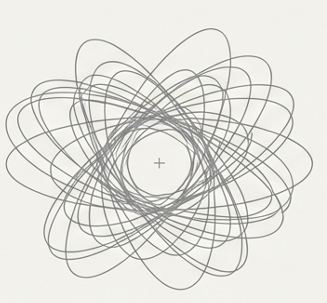
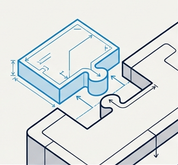
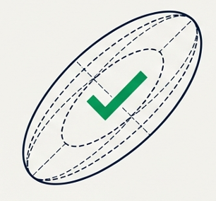

We design safety-critical systems so they remain simple enough to audit, interpretable enough to trust, and safe enough to deploy.
Simple
Constraint-first models, bounded complexity, and physics-guided structure keep the system understandable from the start.
bounded models · physics-guided · constrained
→
Interpretable
Clear uncertainty estimates, traceable model behavior, and auditable outputs make decisions explainable.
uncertainty bounds · traceability · auditable
→
Safe
Operational guardrails, calibrated risk signals, and verification-oriented design support safer deployment in critical environments.
guardrails · calibrated risk · verification
Safety emerges when system behavior stays inspectable under operational pressure.
THE CHALLENGE: CATALOG SCALING
Tens of thousands of space objects require multi-day conjunction screenings. High-fidelity uncertainty propagation is computationally prohibitive, causing false alerts and operator overload.

THE SOLUTION: CTPC AUGMENTATION
A lightweight, Machine Learning-augmented probabilistic correction layer that snaps into existing physics-based propagators to provide statistically calibrated uncertainty.

THE IMPACT: OPERATIONAL SAFETY
Reduces false alerts, mitigates probability dilution, and enables automated risk-aware maneuver planning without disrupting current operational pipelines.

SDA PLATFORM ARCHITECTURE
From Observations to Maneuver Decisions
An end-to-end architecture where thermospheric density drives drag uncertainty, CTPC calibrates covariance in real time, and operators receive stable, actionable collision risk — not volatile alerts.
1 Observation Layer
Sensors
→
Tracking Networks
→
Orbit Determination
↓
2 Environment Layer SiS
Space Weather Inputs
F10.7 • Kp/Ap • Solar wind/IMF
→
Density Modeling
NRLMSISE-00 / JB2008 • FNO / SH
→
Density Field Output
Spatio-temporal thermospheric density • Orbit-sampled profiles
Feeds into propagation drag forcing + CTPC environmental conditioning
↓ drag forcing↓ env signals
3 Prediction Layer
Deterministic Propagation
GMAT / physics model + env-aware drag
Uncertainty is conditioned on space weather regime
↓
5 Risk Intelligence Layer
Collision Probability Pc
→
Pc Stability Analysis
→
Alert Volatility Reduction
Stable risk estimates enabled by calibrated uncertainty
↓
6 Decision Layer
NEW
Risk-Aware Maneuver Optimization
CVaR / probabilistic constraints • fuel vs safety
→
Decision Consistency Monitoring
→
Operator Decision Support
↺Closed-loop decision-aware prediction — feeds back to Propagation + Environment interaction↻
Existing SDA Component
SiS Core Innovation (CTPC + Environment)
Decision Output
This is an environment-conditioned probabilistic system that transforms uncertainty into a decision-grade signal.
Work With Us
We are building safety-critical AI systems for space operations. If you are working on orbital safety, space traffic management, or mission-critical autonomy, we would love to collaborate.